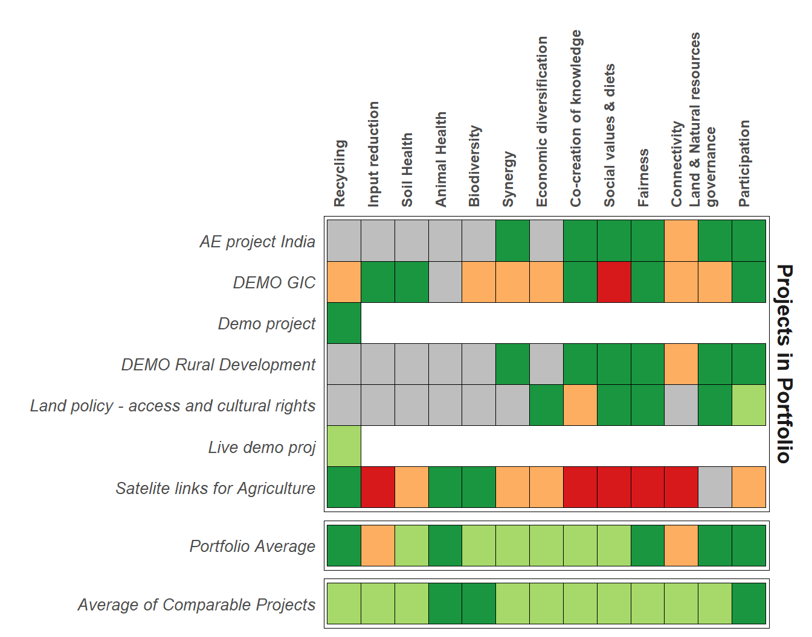

<MySQLDriver>
Max connections: 16
Cur connections: 0
Total connections: 0
Default records per fetch: 500 Exploration of AE Coalition Analysis
Quarto
Attempting to see if I can read in the dump file directly? Seems like it theoretically should be possible to parse this within R but can’t quite seem to crack it. Will leave this here for now in case I ever feel inspired to try
library(readr)
file<-readr::read_file("aec-testing.dump")
Read in the relevant tables for this analysis. I think just these four are needed for now - probably more if some more advanced filtering starts to get used for the comparator options.
Select all projects, all principles and all orgs. Only select ratings which have been filled in.
Merge data and tidy names and remove obsolete duplicated columns for creation and updation
inner_join(principle_project,projects,by=c("project_id"="id")) %>%
inner_join(principles,by=c("principle_id"="id"))%>%
inner_join(organisations,by=c("organisation_id"="id"))%>%
rename("principle_name"=name.y,
"project_name"=name.x,
"organisation_name"=name) %>%
select(-contains("created"),-contains("updated"))->combo_datacombo_data %>%
filter(is.na(rating)==F) %>%
group_by(organisation_id,organisation_name,principle_id,principle_name) %>%
summarise(mean_rating=mean(rating),sd_rating=sd(rating),n=n()) %>%
ungroup() %>%
group_by(principle_name) %>%
mutate(rank0=rank(mean_rating,ties.method ="max" ),rank=rank(mean_rating*-1,ties.method ="max" ),
from=max(rank),percentile=rank0/max(rank))->org_level_summarycombo_data %>%
filter(is.na(rating)==F) %>%
group_by(principle_id,principle_name) %>%
summarise(mean_rating=mean(rating),sd_rating=sd(rating),n=n()) %>%
ungroup() %>%
mutate(principle_name=reorder(principle_name,mean_rating,mean))->overall_summary
org_level_summary<-org_level_summary %>%
mutate(principle_name=factor(principle_name,levels=levels(overall_summary$principle_name)))Option A
overall_summary %>%
ggplot(aes(y=principle_name,x=mean_rating,
xmax=mean_rating+1.96*(sd_rating/sqrt(n)),
xmin=mean_rating-1.96*(sd_rating/sqrt(n)),
),
)+
geom_point()+
geom_errorbar(alpha=0.5)+
geom_point(aes(size=n,col=principle_name),data= filter(org_level_summary,organisation_id==5),alpha=0.6,show.legend=FALSE)+
scale_x_continuous(limits=c(0,2))+
theme_light()+
ylab("")+
xlab("Mean Rating + 95% Confidence Interval for all Projects")Option B
(Unsurprisingly someone had written this function already and posted on stack overflow…)
just_nums <- function(n){
suff <- case_when(n %in% c(11,12,13) ~ "th",
n %% 10 == 1 ~ 'st',
n %% 10 == 2 ~ 'nd',
n %% 10 == 3 ~'rd',
TRUE ~ "th")
paste0(n, suff)
}In terms of recreating this plot outside of R I think the key trick is to have the density plots of the organisation (or portfolio) level averages with the y axis free to vary so they are not actually on a common y axis. Y axis is not really useful to include anyway so not a huge loss. These are effectively half violin plots - you could make them violins if you wanted but in the style it is being presented I think the density plot is probably the better option.
org_level_summary %>%
ggplot(aes(x=mean_rating))+
geom_density(linewidth=1,aes(fill=principle_name),alpha=0.2,show.legend=FALSE)+
facet_wrap(~principle_name,ncol=3,scales="free")+
geom_vline(aes(xintercept=ifelse(organisation_id==5,mean_rating,-1)),col="red",size=1)+
geom_text(aes(x=mean_rating,y=0,hjust=ifelse(mean_rating>1.5,1,ifelse(mean_rating<0.5,0,0.5)),
label=paste0(just_nums(round(percentile*100))," percentile")),
data=filter(org_level_summary,organisation_id==5),size=2.5,vjust=1,fontface=2,col="gray20")+
theme_void()+
theme(panel.spacing.y = unit(1,"cm"),strip.text = element_text(face=2,size=11),axis.text.x = element_text(size=10))+
scale_x_continuous(breaks=c(0,2),labels=c("0","2"),limits=c(0,2))+
scale_y_continuous(limits=c(-0.2,NA))Option C - Make a boring table
Convert the means into % out of the maximum possible score and include some descriptive cut-offs to try to help interpretation Could also go traffic light shading to make it more visually interesting and cut down on unnecessary
org_level_summary %>%
filter(organisation_id==5) %>%
full_join(overall_summary,by="principle_name") %>%
arrange(desc(mean_rating.x)) %>%
mutate(AbsoluteRating=ifelse(mean_rating.x>1.5,"High",ifelse(mean_rating.x<0.5,"Low","Medium")),
MeanScore=scales::percent(round(mean_rating.x/2,2)),
RelativeRating=ifelse(percentile>0.66,"Above Average",ifelse(percentile<0.33,"Below Average","Average")),
Percentile=scales::percent(percentile)) %>%
select(principle_name,AbsoluteRating:Percentile) %>%
kable()| principle_name | AbsoluteRating | MeanScore | RelativeRating | Percentile |
|---|---|---|---|---|
| Animal Health | High | 100% | Above Average | 100% |
| Land & Natural resources governance | High | 88% | Average | 60% |
| Participation | High | 85% | Average | 60% |
| Fairness | High | 78% | Above Average | 80% |
| Recycling | High | 76% | Average | 60% |
| Soil Health | Medium | 75% | Average | 60% |
| Biodiversity | Medium | 75% | Average | 40% |
| Synergy | Medium | 75% | Above Average | 80% |
| Co-creation of knowledge | Medium | 70% | Above Average | 80% |
| Economic diversification | Medium | 67% | Average | 60% |
| Social values & diets | Medium | 60% | Average | 40% |
| Input reduction | Medium | 50% | Average | 50% |
| Connectivity | Medium | 38% | Average | 40% |
Option D
Another thought I had here as a way of summarizing all the information from within a portfolio, and also a way of easily identifying data not recorded (intentionally or otherwise - gray is explicit NA, white is data not entered.)
Principles going along the top since this will always be fixed and easier to have dynamic height rather than dynamic width
Traffic light colour scheme with red fixed at 0 and green fixed at 2 so colour interpretations should always be consistent
combo_data %>%
filter(organisation_id==5) %>%
select(principle_name,project_name,rating) %>%
mutate(source="Projects in Portfolio") %>%
rbind((
org_level_summary %>%
filter(organisation_id==5) %>%
select(principle_name,rating=mean_rating) %>%
mutate(source=" ",project_name="Portfolio Average")
)) %>%
rbind((
overall_summary %>%
select(principle_name,rating=mean_rating) %>%
mutate(source="",project_name="Average of Comparable Projects")
)) %>%
mutate(project_name=factor(project_name,levels=rev(sort(unique(project_name))))) %>%
mutate(principle_name=factor(str_wrap(principle_name,25),levels=str_wrap(overall_summary$principle_name,25))) %>%
ggplot(aes(x=principle_name,y=project_name,fill=rating))+
geom_tile(col="black",show.legend = FALSE)+
facet_grid(source~.,scales="free_y", space = "free_y",as.table = FALSE )+
theme_minimal()+
theme(axis.text.x = element_text(angle=90,hjust = 0,size = 9,face=2),strip.text = element_text(size=13,face=2),
axis.text.y = element_text(size = 10,face=3),
panel.grid.minor = element_blank(),panel.grid.major = element_blank(),panel.border = element_rect(size=0.25,colour = "black",fill=NA))+
scale_x_discrete(position="top")+
xlab("")+ylab("")+
scale_fill_fermenter(palette="RdYlGn",direction = 1,na.value = "gray",limits=c(0,2))